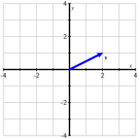
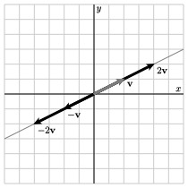

Pada bagian ini kita akan membahas keterkaitan antara persamaan dan solusinya, serta geometri. Misalnya, himpunan solusi dari persamaan linear dalam dua variabel tak diketahui, seperti \(2x + y = 1\text{,}\) dapat direpresentasikan secara grafis oleh sebuah garis lurus. Tujuan bagian ini adalah untuk membahasa keterkaitannya tersebut dengan memperkenalkan vektor, yang akan membantu kita menerapkan geometris dalam kaitannya dengan sistem linear.
Sebuah vektor secara sederhana dinyatakan sebagai matriks dengan satu kolom. Misalnya, \(\vvec = \left[
\begin{array}{r}
2 \\
1 \\
\end{array}
\right]\) dan \(\wvec = \left[
\begin{array}{r}
-3 \\
1 \\
0 \\
2 \\
\end{array}
\right]\) keduanya adalah vektor. Entri dalam sebuah vektor disebut komponen-komponen vektor. Karena vektor \(\vvec\) memiliki dua komponen, kita mengatakan bahwa vektor tersebut merupakan vektor dua-dimensi; dengan cara yang sama, vektor \(\wvec\) adalah vektor empat-dimensi.
Kita menotasikan himpunan semua vektor \(m\)-dimensi dengan \(\real^m\text{.}\) Sehingga, jika \(\uvec\) adalah vektor 3-dimensi, kita mengatakan bahwa \(\uvec\) berada di \(\real^3\text{.}\)
Meskipun sulit untuk memvisualisasikan vektor empat-dimensi, kita dapat menggambarkan vektor dua-dimensi \(\vvec\text{,}\) seperti yang ditunjukkan dalam Figure 3.1.1.

Figure3.1.1.Representasi grafis dari vektor \(\vvec = \twovec21\text{.}\)
Kita dapat membayangkan \(\vvec\) sebagai dengan sebuah lintasa pada bidang di mana kita bergerak dua satuan secara horizontal dan satu satuan secara vertikal. Kita bergerak dari titik asal \((0,0)\) ke titik \((2,1)\text{,}\) seperti yang ditunjukkan dalam gambar.
Perhatikan vektor-vektor yang memiliki bentuk \(\vvec +
c\wvec\) dimana \(c\) adalah sembarang skalar. Gambarkan vektor-vektor ini, misalnya, \(c = -2, -1, 0, 1, \) dan \(2\text{.}\) Berikan deskripsi geometris dari himpunan vektor-vektor ini.
Jika \(c\) dan \(d\) adalah dua skalar, maka vektor
\begin{equation*}
c \vvec + d \wvec
\end{equation*}
disebut kombinasi linear dari vektor-vektor \(\vvec\) dan \(\wvec\text{.}\) Temukan vektor yang merupakan kombinasi linear ketika \(c = -2\) dan \(d = 1\text{.}\)
Dapatkah vektor \(\left[\begin{array}{r} -31 \\ 37
\end{array}\right]\) direpresentasikan sebagai kombinasi linear dari \(\vvec\) dan \(\wvec\text{?}\) Atau, tenemukan skalar \(c\) dan \(d\) sedemikian sehingga \(c\vvec+d\wvec = \twovec{-31}{37}\text{.}\)
Pertama, kita melihat bahwa perkalian skalar memiliki efek meregangkan atau memampatkan sebuah vektor. Perkalian dengan skalar negatif mengubah arah vektor. Dalam kedua kasus, Figure 3.1.5 menunjukkan bahwa kelipatan skalar dari sebuah vektor \(\vvec\) terletak pada garis yang sama yang didefinisikan oleh \(\vvec\text{.}\)

Figure3.1.5.Kelipatan skalar dari vektor \(\vvec=\twovec21\text{.}\)
Untuk merepresentasikan jumlah \(\vvec + \wvec\text{,}\)seperti gambar Figure 3.1.6 dimana ekor dari \(\wvec\) ditempatkan pada ujung dari \(\vvec\text{.}\)
Sage dapat melakukan perkalian skalar dan penjumlahan vektor. Kita mendefinisikan sebuah vektor menggunakan perintah vector; kemudian * dan + menotasikan perkalian skalar dan penjumlahan vektor.
Dalam aktivitas ini, kita akan melihat kombinasi linear dari sepasang vektor, \(\vvec = \left[\begin{array}{r} 2 \\ 1 \end{array}\right]\) dan \(\wvec = \left[\begin{array}{r} 1 \\ 2 \end{array}\right]
\text{.}\)
Diagram di bawah ini dapat digunakan untuk membangun kombinasi linear yang bobotnya \(c\) dan \(d\) dapat divariasikan menggunakan slider di bagian atas. Vektor-vektor \(\vvec\) dan \(\wvec\) digarisbawahi sementara kombinasi linear
Bobot \(d\) pada awalnya diatur ke 0. Jelaskan apa yang terjadi ketika Anda memvariasikan \(c\) sambil menjaga \(d=0\text{.}\) Bagaimana hal ini terkait dengan perkalian skalar?
Berapakah kombinasi linear dari \(\vvec\) dan \(\wvec\) ketika \(c = 1\) dan \(d=-2\text{?}\) Anda mungkin menemukan hasil ini menggunakan diagram, tetapi Anda juga harus memverifikasinya dengan menghitung kombinasi linear tersebut.
Dapatkah vektor \(\left[\begin{array}{r} 0 \\ 0 \end{array} \right]\) diekspresikan sebagai kombinasi linear dari \(\vvec\) dan \(\wvec\text{?}\) Jika ya, berapakah bobot \(c\) dan \(d\text{?}\)
Dapatkah vektor \(\left[\begin{array}{r} 3 \\ 0 \end{array} \right]\) diekspresikan sebagai kombinasi linear dari \(\vvec\) dan \(\wvec\text{?}\) Jika ya, berapakah bobot \(c\) dan \(d\text{?}\)
Verifikasi hasil dari bagian sebelumnya dengan menemukan secara aljabar bobot \(c\) dan \(d\) yang membentuk kombinasi linear \(\left[\begin{array}{r} 3 \\ 0 \end{array} \right]\text{.}\)
Dapatkah vektor \(\left[\begin{array}{r} 1.3 \\ -1.7 \end{array} \right]\) diekspresikan sebagai kombinasi linear dari \(\vvec\) dan \(\wvec\text{?}\) Bagaimana dengan vektor \(\left[\begin{array}{r} 15.2 \\ 7.1 \end{array} \right]\text{?}\)
Aktivitas ini mengilustrasikan bagaimana kombinasi linear dibangun secara geometris: kombinasi linear \(c\vvec + d\wvec\) ditemukan dengan berjalan sepanjang \(\vvec\) sebanyak \(c\) kali diikuti dengan berjalan sepanjang \(\wvec\) sebanyak \(d\) kali. Ketika salah satu bobot dijaga konstan sementara yang lain bervariasi, vektor bergerak sepanjang sebuah garis.
Misalkan kita memiliki vektor \(\vvec = \twovec3{-1}\) dan \(\wvec=\twovec43\text{.}\) Mari kita tentukan apakah kita dapat mendeskripsikan vektor \(\bvec=\twovec{-11}{-18}\) sebagai kombinasi linear dari \(\vvec\) dan \(\wvec\text{.}\) Dengan kata lain, kita ingin mengetahui apakah terdapat bobot \(c\) dan \(d\) sedemikian sehingga
Vektor \(\bvec\) adalah kombinasi linear dari vektor-vektor \(\vvec_1,\vvec_2,\ldots,\vvec_n\) jika dan hanya jika sistem linear yang berkorespondensi dengan matriks augmented
dapatkah \(\bvec\) diekspresikan sebagai kombinasi linear dari \(\vvec_1\text{,}\)\(\vvec_2\text{,}\) dan \(\vvec_3\text{?}\) Nyatakan ulang pertanyaan ini dengan menuliskan sistem linear untuk bobot \(c_1\text{,}\)\(c_2\text{,}\) dan \(c_3\) dan gunakan sel Sage di bawah ini untuk menjawab pertanyaan ini.
Identifikasi vektor-vektor \(\vvec_1\text{,}\)\(\vvec_2\text{,}\)\(\vvec_3\text{,}\) dan \(\bvec\) sedemikian sehingga pertanyaan "Apakah sistem linear ini konsisten?" ekuivalen dengan pertanyaan "Dapatkah \(\bvec\) diekspresikan sebagai kombinasi linear dari \(\vvec_1\text{,}\)\(\vvec_2\text{,}\) dan \(\vvec_3\text{?}\)"